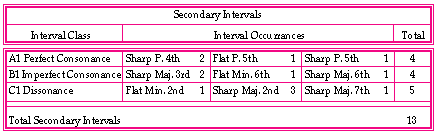

The table below shows the sum of 13 Secondary intervals: 4 perfect consonances, 4 imperfect consonances, and 5 dissonances. The observed results are that there are fewer Secondary perfect and imperfect consonances, compared to the Primary table, while the count of dissonant intervals stayed the same.
Example 9: Secondary intervals' table.
